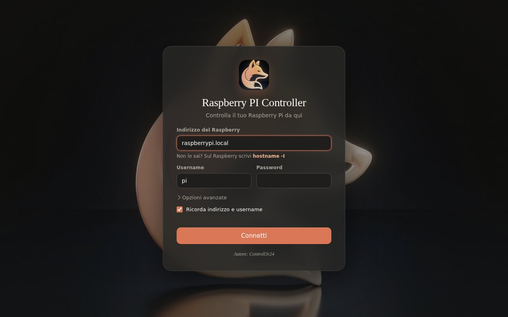

Guida all'installazione
Dal download al primo collegamento. Segui i passi in ordine.
Requisiti
Controlla di avere tutto prima di cominciare.
Sul computer
- Windows 10 o 11
- Node.js (versione LTS), solo per creare l'app
- Internet la prima volta, per scaricare le dipendenze
- Circa 500 MB liberi durante la creazione
Sul Raspberry Pi
- Raspberry Pi OS, o un altro Linux con systemd
- SSH attivo
- Raspberry e computer sulla stessa rete
- Un utente con permessi sudo, per servizi, processi e spegnimento
Prepara il Raspberry
Attiva SSH. Dal Raspberry (con tastiera e schermo, o da un altro accesso) scrivi:
sudo raspi-configVai su Interface Options, poi SSH, poi Sì. In alternativa, con un solo comando:
sudo systemctl enable --now sshTrova l'indirizzo del Raspberry:
hostname -IAl posto dell'indirizzo, di solito funziona anche il nome raspberrypi.local.
Crea l'app
- Estrai il file ZIP del progetto in una cartella.
- Se non lo hai, installa Node.js (versione LTS) da nodejs.org.
- Fai doppio clic su crea-app.bat e conferma la richiesta di amministratore.
- Aspetta la fine: l'installazione parte da sola e crea il collegamento sul desktop.
La prima volta vengono scaricate le dipendenze, quindi serve internet.
Per provare l'app senza installarla, apri un terminale nella cartella del progetto e scrivi:
npm install
npm startPrimo collegamento
Apri Raspberry PI Controller e compila i campi:
- Indirizzo: l'IP o il nome del Raspberry
- Username: di solito pi, oppure quello scelto in installazione
- Password: quella dell'utente
Premi Connetti. Se qualcosa non va, l'app ti dice cosa controllare. Porta e chiave privata sono in Opzioni avanzate.

Le app
Cosa fa ogni app e cosa richiede sul Raspberry.
- Terminale
- Una shell completa. Non richiede nulla di speciale.
- File Manager
- Sfoglia, modifica, carica e scarica file tramite SFTP.
- Browser
- Browser a schede, separato dal tuo browser di Windows.
- Monitor di sistema
- Legge i dati da /proc e dal sensore termico del sistema.
- Processi
- Elenco ordinato per CPU. Per terminare un processo serve sudo.
- Servizi
- Usa systemctl. Per avviare o fermare servizi serve sudo.
- Rete
- Usa ip e iwgetid. Il Wi-Fi in basso a destra si aggiorna da solo.
- GPIO
- Usa pinctrl o raspi-gpio, a seconda del sistema.
- Impostazioni e alimentazione
- Aspetto, informazioni di sistema, riavvio e spegnimento (con sudo).
Accesso con chiave SSH
Sul tuo computer crea una chiave, da PowerShell:
ssh-keygen -t ed25519Copia la chiave pubblica sul Raspberry:
type $env:USERPROFILE\.ssh\id_ed25519.pub | ssh pi@raspberrypi.local "mkdir -p ~/.ssh && cat >> ~/.ssh/authorized_keys"Nel login apri Opzioni avanzate e scegli il file id_ed25519 in Chiave privata.
Problemi comuni
Connessione rifiutata
SSH non è attivo sul Raspberry. Torna a Prepara il Raspberry.
Il Raspberry non risponde
Controlla che sia acceso e sulla stessa rete. Prova con l'indirizzo IP invece del nome.
Username o password non corretti
Controlla maiuscole e minuscole. Sulle versioni recenti di Raspberry Pi OS l'utente pi non esiste più: usa quello creato in installazione.
crea-app.bat dice che Node.js non c'è
Installa Node.js, poi chiudi e riapri il file.
Errore durante la creazione dell'app
Il file va eseguito come amministratore e lo chiede da solo. Controlla anche l'antivirus e la connessione a internet.
Servizi, processi o spegnimento non funzionano
L'utente deve poter usare sudo. Per i comandi sudo l'app usa la password inserita al login.